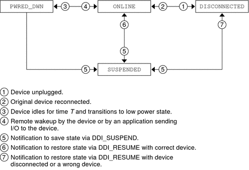

Writing Device Drivers
|
|||
|
Part I Designing Device Drivers for the Solaris Platform 1. Overview of Solaris Device Drivers 2. Solaris Kernel and Device Tree 5. Managing Events and Queueing Tasks 7. Device Access: Programmed I/O 10. Mapping Device and Kernel Memory 14. Layered Driver Interface (LDI) Part II Designing Specific Kinds of Device Drivers 15. Drivers for Character Devices 18. SCSI Host Bus Adapter Drivers 19. Drivers for Network Devices USB in the Solaris Environment Part III Building a Device Driver 21. Compiling, Loading, Packaging, and Testing Drivers 22. Debugging, Testing, and Tuning Device Drivers 23. Recommended Coding Practices B. Summary of Solaris DDI/DKI Services C. Making a Device Driver 64-Bit Ready |
Device State ManagementManaging a USB device includes accounting for hotplugging, system power management (checkpoint and resume), and device power management. All client drivers should implement the basic state machine shown in the following figure. For more information, see /usr/include/sys/usb/usbai.h. Figure 20-4 USB Device State MachineThis state machine and its four states can be augmented with driver-specific states. Device states 0x80 to 0xff can be defined and used only by client drivers. Hotplugging USB DevicesUSB devices support hotplugging. A USB device can be inserted or removed at any time. The client driver must handle removal and reinsertion of an open device. Use hotplug callbacks to handle open devices. Insertion and removal of closed devices is handled by the attach(9E) and detach(9E) entry points. Hotplug CallbacksThe USBA 2.0 framework supports the following event notifications:
Client drivers must call usb_register_hotplug_cbs(9F) in their attach(9E) routine to register for event callbacks. Drivers must call usb_unregister_hotplug_cbs(9F) in their detach(9E) routine before dismantling. Hot InsertionThe sequence of events for hot insertion of a USB device is as follows:
Hot RemovalThe sequence of events for hot removal of a USB device is as follows:
The following events take place if the device node is not open when the hubd driver attempts to offline the device node:
The following events take place if the device node is open when the hubd driver attempts to offline the device node:
If the device node was open when the hubd driver attempted to offline the device node and the user later closes the device node, the hubd driver periodic offlining of that device node succeeds and the following events take place:
If the user closes all applications that use the device, the port becomes available again. If the application does not terminate or does not close the device, the port remains unavailable. Hot ReinsertionThe following events take place if a previously-removed device is reinserted into the same port while the device node of the device is still open:
The following events might take place if the client driver determines that the current device is not the same as the device that was previously connected:
The following events might take place if the client driver determines that the current device is the same as the device that was previously connected:
Power ManagementThis section discusses device power management and system power management. Device power management manages individual USB devices depending on their I/O activity or idleness. System power management uses checkpoint and resume to checkpoint the state of the system into a file and shut down the system completely. (Checkpoint is sometimes called “system suspend.”) The system is resumed to its pre-suspend state when the system is powered up again. Device Power ManagementThe following summary lists what your driver needs to do to power manage a USB device. A more detailed description of power management follows this summary.
The USBA 2.0 framework supports four power levels as specified by the USB interface power management specification. See /usr/include/sys/usb/usbai.h for information on mapping USB power levels to operating system power levels. The hubd driver suspends the port when the device goes to the USB_DEV_OS_PWR_OFF state. The hubd driver resumes the port when the device goes to the USB_DEV_OS_PWR_1 state and above. Note that port suspend is different from system suspend. In port suspend, only the USB port is shut off. System suspend is defined in System Power Management. The client driver might choose to enable remote wakeup on the device. See the usb_handle_remote_wakeup(9F) man page. When the hubd driver sees a remote wakeup on a port, the hubd driver completes the wakeup operation and calls pm_raise_power(9F) to notify the child. The following figure shows the relationship between the different pieces of power management. Figure 20-5 USB Power Management The driver can implement one of the two power management schemes described at the bottom of Figure 20-5. The passive scheme is simpler than the active scheme because the passive scheme does not do power management during device transfers. Active Power ManagementThis section describes the functions you need to use to implement the active power management scheme. Do the following work in the attach(9E) entry point for your driver:
Do the following work in the detach(9E) entry point for your driver:
When a driver thread wants to start I/O to the device, that thread does the following tasks:
The driver calls pm_idle_component(9F) when the driver receives notice that an I/O transfer has completed. In the power(9E) entry point for your driver, check whether the power level to which you are transitioning is valid. You might also need to account for different threads calling into power(9E) at the same time. The power(9E) routine might be called to take the device to the USB_DEV_OS_PWR_OFF state if the device has been idle for some time or the system is shutting down. This state corresponds to the PWRED_DWN state shown in Figure 20-4. If the device is going to the USB_DEV_OS_PWR_OFF state, do the following work in your power(9E) routine:
The power(9E) routine might be called to power on the device when either a device-initiated remote wakeup or a system-initiated wakeup is received. Wakeup notices occur after the device has been powered down due to extended idle time or system suspend. If the device is going to the USB_DEV_OS_PWR_1 state or above, do the following work in your power(9E) routine:
If the port to which the device is connected was previously suspended, that port is resumed before power(9E) is called. Passive Power ManagementThe passive power management scheme is simpler than the active power management scheme described above. In this passive scheme, no power management is done during transfers. To implement this passive scheme, call pm_busy_component(9F) and pm_raise_power(9F) when you open the device. Then call pm_idle_component(9F) when you close the device. System Power ManagementSystem power management consists of turning off the entire system after saving its state, and restoring the state after the system is turned back on. This process is called CPR (checkpoint and resume). USB client drivers operate the same way that other client drivers operate with respect to CPR. To suspend a device, the driver's detach(9E) entry point is called with a cmd argument of DDI_SUSPEND. To resume a device, the driver's attach(9E) entry point is called with a cmd argument of DDI_RESUME. When you handle the DDI_SUSPEND command in your detach(9E) routine, clean up device state and clean up driver state as much as necessary for a clean resume later. (Note that this corresponds to the SUSPENDED state in Figure 20-4.) When you handle the DDI_RESUME command in your attach(9E) routine, always take the device to full power to put the system in sync with the device. For USB devices, suspend and resume are handled similarly to a hotplug disconnect and reconnect (see Hotplugging USB Devices). An important difference between CPR and hotplugging is that with CPR the driver can fail the checkpoint process if the device is not in a state from which it can be suspended. For example, the device cannot be suspended if the device has an error recovery in progress. The device also cannot be suspended if the device is busy and cannot be stopped safely. SerializationIn general, a driver should not call USBA functions while the driver is holding a mutex. Therefore, race conditions in a client driver can be difficult to prevent. Do not allow normal operational code to run simultaneously with the processing of asynchronous events such as a disconnect or CPR. These types of asynchronous events normally clean up and dismantle pipes and could disrupt the normal operational code. One way to manage race conditions and protect normal operational code is to write a serialization facility that can acquire and release an exclusive-access synchronization object. You can write the serialization facility in such a way that the synchronization object is safe to hold through calls to USBA functions. The usbskel sample driver demonstrates this technique. See Sample USB Device Driver for information on the usbskel driver. |
||
|